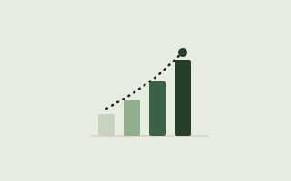

Framework 06
The Momentum Chart
A simple visible tracker for making consistency obvious. What gets seen gets repeated. This makes it clear and reaffirming.
The problem it solves
Consistency is hard to feel from the inside: most days feel roughly the same whether or not you're actually building something. A visible record fixes that: it turns an invisible pattern into something you can see accumulate, which changes how motivating it feels to keep going.
How it works
- Pick one visible tracking method: a paper calendar with X's, a shared spreadsheet, a sticky note grid. Analog is fine; the point is visibility, not sophistication.
- Mark it the same day you complete the movement, not retroactively. Same-day marking keeps the record honest and the reward immediate.
- Keep the tracker somewhere you'll actually see it unprompted: a monitor edge, not a buried app.
- Don't reset to zero after a missed day. Note the gap and keep going; the ledger tracks the pattern, not a perfect streak.
Why it works
Self-monitoring is one of the most consistently cited components across habit-formation research: seeing a behavior recorded appears to reinforce the context-behavior link that drives automaticity, on top of any motivational boost from watching a streak grow. More detail in this research agenda on habit-based interventions.